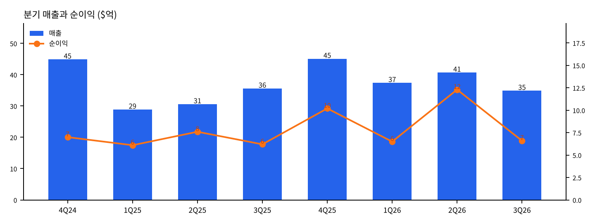
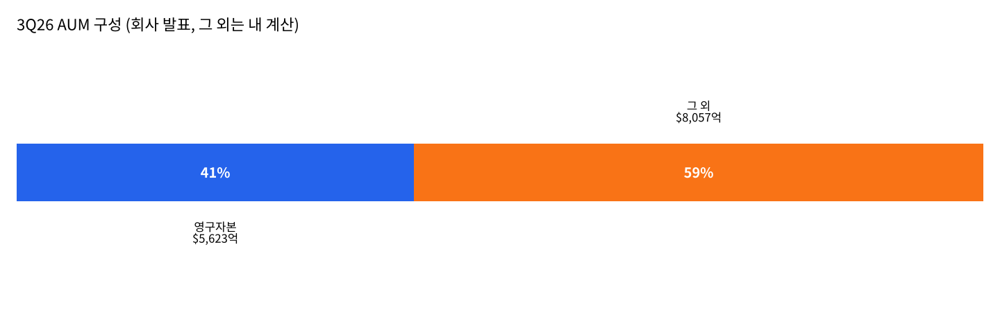
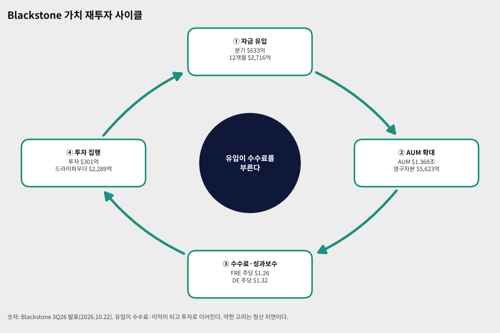

Blackstone은 연기금·보험사·개인 자산가의 돈을 받아 사모주식·부동산·크레딧에 투자하고 관리 수수료와 성과보수를 받는다.
| 항목 | 내용 |
|---|---|
| 종목 | Blackstone (BX) · NYSE · 금융(대체투자) · 뉴욕 |
| 최근 분기(3Q26) | AUM $1.368조, DE 주당 $1.32 |
| 핵심 상품 | 사모주식, 부동산, 크레딧·보험, 멀티에셋 |
| 직원 수 | 약 5,300명(트레이딩뷰) |
| 멀티플 | PER·PEG·P/S는 08~10 항목 표 참조 |
| 직책 | 인물 | 역할·특징 |
|---|---|---|
| 회장·CEO | 스티븐 슈워츠먼(Stephen Schwarzman) | 공동 창업자. "채권 금리 급등이 청산을 늦춘다"고 설명 |
| 사장 | 존 그레이(Jon Gray) | (확인 필요) |
경영 스타일: 영구자본 확대. 수수료가 꾸준한 자금(영구자본)을 늘려 이익 변동을 줄인다.
투자 대상과 자금원을 폭넓게 가진 규모가 경쟁력이다.
개인 자산가 AUM이 $3,300억으로 성장 중이다.
다음 실적발표는 세 가지 질문에 답하는 자리다.
1. 청산(엑싯)이 재개되나?
2. 유입이 분기 $600억대를 유지하나?
3. 개인 자산가 상품이 계속 늘어나나?
한 줄 판정 규칙: 첫 질문(청산 재개)이 확인되면 약한 고리(성과보수 감소)가 풀린다.
일정: 4Q26 실적은 2027.01.28 발표 예정이다.
| 분기 | 매출 | 순이익 | EPS | 조정 EPS | 특이 사항 |
|---|---|---|---|---|---|
| 4Q24 | $44.9억 | $7.0억 | 0.92 | 1.69 | |
| 1Q25 | $28.9억 | $6.1억 | 0.80 | 1.09 | |
| 2Q25 | $30.6억 | $7.6억 | 0.98 | 1.21 | |
| 3Q25 | $35.6억 | $6.2억 | 0.80 | 1.52 | |
| 4Q25 | $45.1억 | $10.2억 | 1.30 | 1.75 | |
| 1Q26 | $37.4억 | $6.5억 | 0.83 | 1.36 | |
| 2Q26 | $40.7억 | $12.3억 | 1.54 | 1.52 | |
| 3Q26 | $34.9억 | $6.6억 | 0.83 | 1.32 | DE $17.2억(-9%), AUM $1.368조 |
매출은 트레이딩뷰 스캐너의 분기 총매출이라 회사가 발표한 순매출과 다를 수 있다. 스캐너 매출은 총수익 기준이라 회사의 순매출과 다르다. 조정 EPS 열은 주당 분배가능이익(DE) 기준이다. 매출·순이익·EPS(GAAP 희석)는 트레이딩뷰 스캐너, 조정 EPS는 트레이딩뷰 실적 페이지의 Reported 값이다. 분기 정렬은 오래된 분기→최신이다.

흐름 요약: 최근 분기 매출은 $34.9억로 전년 동기 $35.6억 대비 -2.0%, 순이익은 $6.6억(전년 $6.2억)다. 최근 4분기 GAAP EPS는 $4.50, 조정 EPS는 $5.95다.
| 항목 | 내용 | 3Q26 AUM | 비고 |
|---|---|---|---|
| 영구자본 | 수수료가 꾸준한 자금 | $5,623억 | +12% |
| 그 외(내 계산) | 기간 한정 펀드 등 | $8,057억 | 총 $1.368조에서 영구자본을 뺀 값 |

매출 구성이 아니라 AUM 구성이다. 영구자본이 40%를 넘는다.
Blackstone은 투자자의 자본을 불려주고 투자 대상 기업과 자산의 가치를 키우는 것을 목표로 한다.
| 축 | 내용 |
|---|---|
| AUM | $1.368조 |
| 유입 | 12개월 $2,716억 |
| 드라이파우더 | $2,289억 |

| 이동평균 | 값 | 종가 대비 | 위치 |
|---|---|---|---|
| 5일선 | $117.59 | -1.6% | 종가 아래 |
| 20일선 | $119.42 | -3.1% | 종가 아래 |
| 50일선 | $117.57 | -1.6% | 종가 아래 |
| 100일선 | $125.41 | -7.7% | 종가 아래 |
| 200일선 | $122.22 | -5.3% | 종가 아래 |
52주 고가 $165.14(2026-01-16)·저가 $101.73(2026-03-12) 범위에서 종가 $115.71는 모든 이동평균선 아래이고.
| 규칙 | 기준 | 현재 값 | 신호 |
|---|---|---|---|
| 장기 추세 필터 | 종가 vs 200일선 | $115.71 < $122.22 | 매도 |
| 중장기 교차 | 50일선 vs 200일선 | $117.57 < $122.22 | 매도 |
| 단기 교차 | 20일선 vs 50일선 | $119.42 > $117.57 | 매수 |
| 돈키언 채널 | 55일 고가 $140.62 / 저가 $105.44 | 중간값 $123.03 아래 | 매도 |
| 1개월 모멘텀 | 21거래일 수익률 | +4.9% (기준 $110.34) | 매수 |
| 3개월 모멘텀 | 63거래일 수익률 | -18.1% (기준 $141.35) | 매도 |
| 6개월 모멘텀 | 126거래일 수익률 | -1.0% (기준 $116.83) | 매도 |
| 12개월 모멘텀 | 252거래일 수익률 | -16.4% (기준 $138.42) | 매도 |
| 종합 (8개 평균) | -0.50 | 매도 |
해석: 매수 신호 2개(단기 교차, 1개월 모멘텀), 매도 신호 6개(장기 추세 필터, 중장기 교차, 돈키언 채널, 3개월 모멘텀, 6개월 모멘텀, 12개월 모멘텀). CTA 점수 -0.50(매도). 14일 ATR $4.11 (3.6%), 52주 고가 $165.14 · 저가 $101.73.
| 가격 | 기준 | 무엇이 바뀌나 |
|---|---|---|
| $141.35 | 3개월 모멘텀 기준가 | 종가가 이 가격 위면 3개월 신호 매수 |
| $140.62 | 55일 고가 | 돌파 시 채널 상단 갱신 |
| $138.42 | 12개월 모멘텀 기준가 | 종가가 이 가격 위면 12개월 신호 매수 |
| $123.03 | 돈키언 중간값 | 55일 채널 중간값 위/아래로 신호가 바뀜 |
| $122.22 | 200일선 | 종가가 이 선 위/아래인지로 장기 추세 신호가 바뀜 |
| $116.83 | 6개월 모멘텀 기준가 | 종가가 이 가격 위면 6개월 신호 매수 |
| $110.34 | 1개월 모멘텀 기준가 | 종가가 이 가격 위면 1개월 신호 매수 |
| $105.44 | 55일 저가 | 이탈 시 채널 하단 갱신 |
가격 수준은 신호가 바뀌는 기준선일 뿐 진입·청산 가격 제안이 아니다. 20일/50일 교차는 이동평균 자체가 움직여 단일 가격으로 표시하지 않았다. 일봉·주봉은 종가 기준 직접 계산(고저 데이터 미사용)이다.
| 악재 요인 | 내용 | 강도 |
|---|---|---|
| 금리·청산 | 채권 금리 급등으로 청산 지연 | 높음 |
| DE 감소 | 분배가능이익 주당 -9% | 중간 |
| 성과보수 의존 | 실현이익이 변동 | 중간 |
| 티커 | 회사 | PER(TTM) | PEG | P/S | EPS 성장(YoY) |
|---|---|---|---|---|---|
| BX | Blackstone | 25.7배 | 0.90 | 8.74배 | +29% |
| KKR | KKR | 27.3배 | 0.60 | 3.64배 | +46% |
| ARES | Ares Management | 102.4배 | – | 4.48배 | -47% |
| BLK | BlackRock | 27.7배 | 2.83 | 6.65배 | +10% |
| APO | Apollo | – | – | 2.29배 | -128% |
비교 결론: Blackstone의 PER 25.7배는 KKR·BlackRock·Ares Management보다 낮다. PEG 0.90는 KKR(0.60)보다 높고 BlackRock(2.83)보다 낮다.
현금·부채는 트레이딩뷰 스캐너 값이다. 운용사라 대차대조표와 펀드 규모가 다르다.
| 지표 | 값 | 출처 | 해석 |
|---|---|---|---|
| 현금·단기투자 | $33억 | 트레이딩뷰 스캐너(최근 분기) | |
| 총부채 | $142억 | 트레이딩뷰 스캐너(최근 분기) | |
| 순부채(부채−현금) | $109억 | 내 계산 | 현금 대비 부채 부담 |
| 잉여현금흐름(TTM) | $24억 | 트레이딩뷰 스캐너 | |
| TTM 매출 | $158억 | 트레이딩뷰 스캐너 |
| 기준 | 매출 | P/S | 비고 |
|---|---|---|---|
| 내 계산(종가 ÷ 최근 4분기 매출 합계) | $158.1억 | 8.74배 | 시총은 정렬용 데이터에서만 사용 |
| 동종(트레이딩뷰) | – | KKR 3.64배 · ARES 4.48배 · BLK 6.65배 · APO 2.29배 | 11.19 |
해석: 이익은 DE와 GAAP EPS가 크게 달라 기준을 함께 본다(내 해석).
EBITDA는 영업활동의 현금 창출력을 보는 지표이고, PEG는 PER을 EPS 성장률로 나눈 값이다. EBITDA·FCF는 트레이딩뷰 TTM 값이다.
| 지표 | 값 | 산출 |
|---|---|---|
| EBITDA(TTM) | $87억 | 트레이딩뷰 스캐너 |
| EBITDA 마진 | 55.1% | EBITDA ÷ TTM 매출(내 계산) |
| FCF 마진 | 15.2% | FCF ÷ TTM 매출(내 계산) |
| PER(GAAP TTM) | 25.7배 | $115.71 ÷ $4.50 |
| PER(조정 TTM) | 19.4배 | $115.71 ÷ $5.95 |
| 방식 | PER | EPS 성장률 | PEG | 판정 |
|---|---|---|---|---|
| GAAP EPS (TTM $4.50) | 25.7배 | +29% ($3.50 → $4.50) | 0.90 | 투자 적격 |
| 조정 EPS (TTM $5.95) | 19.4배 | +8% ($5.51 → $5.95) | 2.44 | 기준 초과 |
판정: GAAP EPS 기준 PEG 0.90 → 1.0 이하(투자 적격) PEG 기준은 1.0 이하 투자 적격, 0.5 이하 적극 매수다. EPS 성장률은 최근 4분기 EPS 합계를 직전 4분기 합계와 비교한 값(내 계산)이고, 일회성 항목이 있으면 조정 EPS 행을 함께 본다.

Blackstone의 사이클: 유입이 AUM과 수수료를 키우고 이익이 투자 집행에 쓰여 성과를 만들어 다음 유입을 부른다.
| 고리 | 현재 숫자·근거 |
|---|---|
| ① 자금 유입 | 분기 유입 $633억 · 12개월 $2,716억 |
| ② AUM 확대 | AUM $1.368조(+10%) · 영구자본 $5,623억 |
| ③ 수수료·성과보수 | FRE 주당 $1.26(+6%) · DE 주당 $1.32(-9%) |
| ④ 투자 집행 | 3Q 투자 집행 $301억 · 드라이파우더 $2,289억 |
사이클의 특징: 약한 고리는 청산(실현) 지연이다. "(내 해석)"은 보고서 수치가 아닌 해석이다.